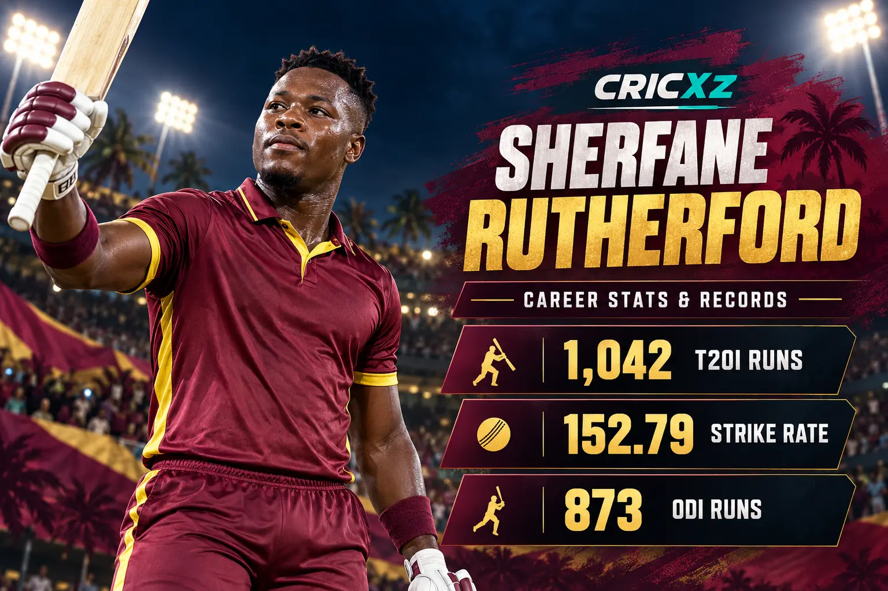
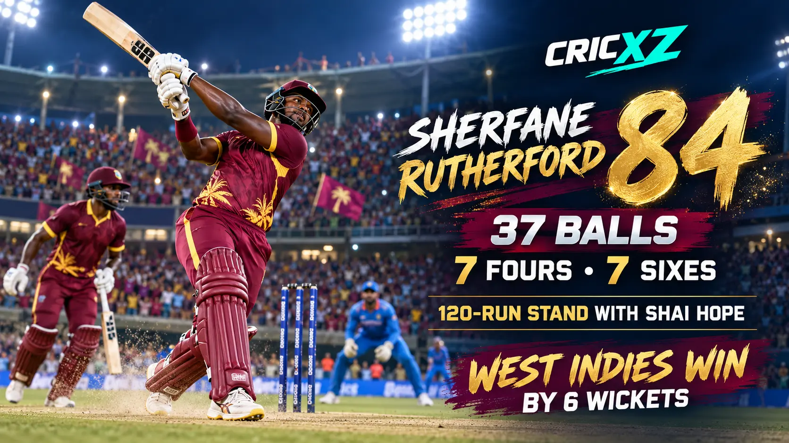

ODI Career
- Matches
- 30
- Innings
- 28
- Runs
- 873
- Batting average
- 36.38
- Strike rate
- 99.10
- Highest score
- 113
- Hundreds / Fifties
- 1 / 8

Sherfane Rutherford is a powerful West Indies middle-order batter whose clean striking has made him a dangerous finisher in international and franchise cricket. His T20I strike rate above 150 reflects an attacking game built for the closing overs.
Career statistics are current through the second India–West Indies T20I on 9 October 2026.
Rutherford remains an active international player, so these figures may change after his next appearance.
Rutherford emerged from Guyana cricket as a fearless left-handed hitter and earned wider attention through the Caribbean Premier League. His ability to attack pace and clear the boundary has since taken him to international cricket and major franchise competitions around the world.

Rutherford struck 84 from 37 balls against India in Ranchi on 9 October 2026. His innings contained seven fours and seven sixes and became his highest score in T20 internationals.
West Indies were 58/3 when Rutherford joined Shai Hope. Their 120-run partnership transformed the chase before Hope's unbeaten century and Romario Shepherd's late hitting completed a target of 250 with nine balls remaining. Read the full report of West Indies' six-wicket victory in the second T20I.
Three days before his Ranchi assault, Rutherford made 56 from 34 balls in the first T20I in Lucknow. He struck six fours and three sixes to help West Indies reach 171 after early wickets.
The consecutive scores of 56 and 84 underlined both his power and his growing responsibility in the West Indies middle order, even though India won the opening T20I.
3 December 2023
Made his ODI debut for West Indies against England in Antigua.
22 December 2018
Made his T20I debut against Bangladesh in Mirpur.
23 March 2019
Made his IPL debut for Delhi Capitals against Mumbai Indians.
Passed the 1,000-run mark while maintaining a strike rate above 150.
Established himself as one of West Indies' most aggressive middle-order batters.
Registered his first international century against Bangladesh.
Produced a career-best international T20 innings in the Ranchi chase.
Added 120 with Shai Hope to rescue West Indies from 58/3.
Made an unbeaten 76 against England during the 2026 T20 World Cup.
Became a central power-hitting option in the West Indies white-ball middle order.
Played a decisive unbeaten innings in West Indies' victory over England.
Built experience across leading T20 competitions in the Caribbean and overseas.
Converted his power game into a maiden 50-over international hundred.
Career statistics and recent-match details were checked on 10 October 2026.
Read the record chase in Ranchi, revisit his 56 in the first T20I, or browse all CricXZ player profiles.